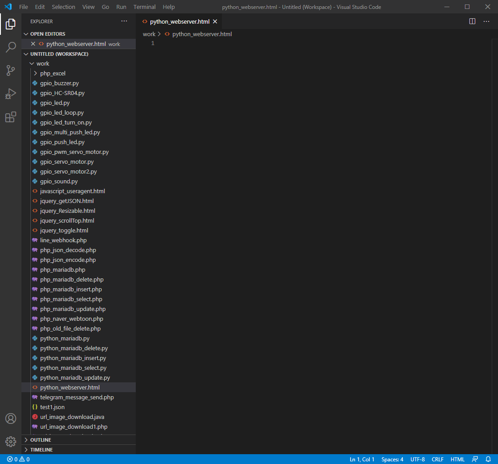
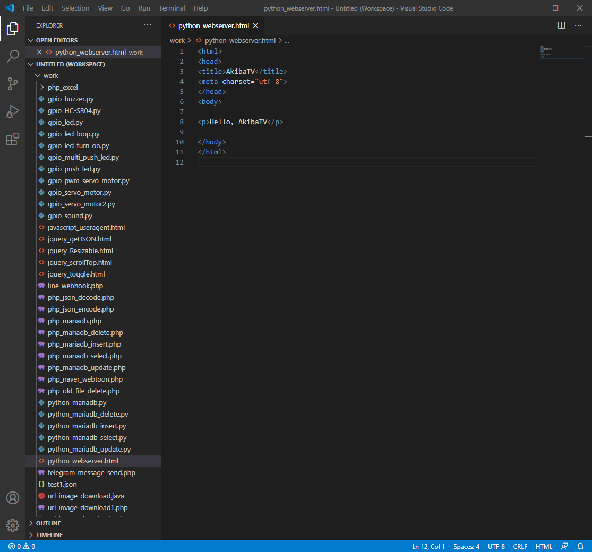
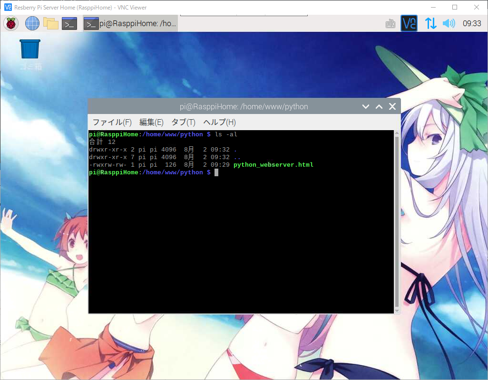
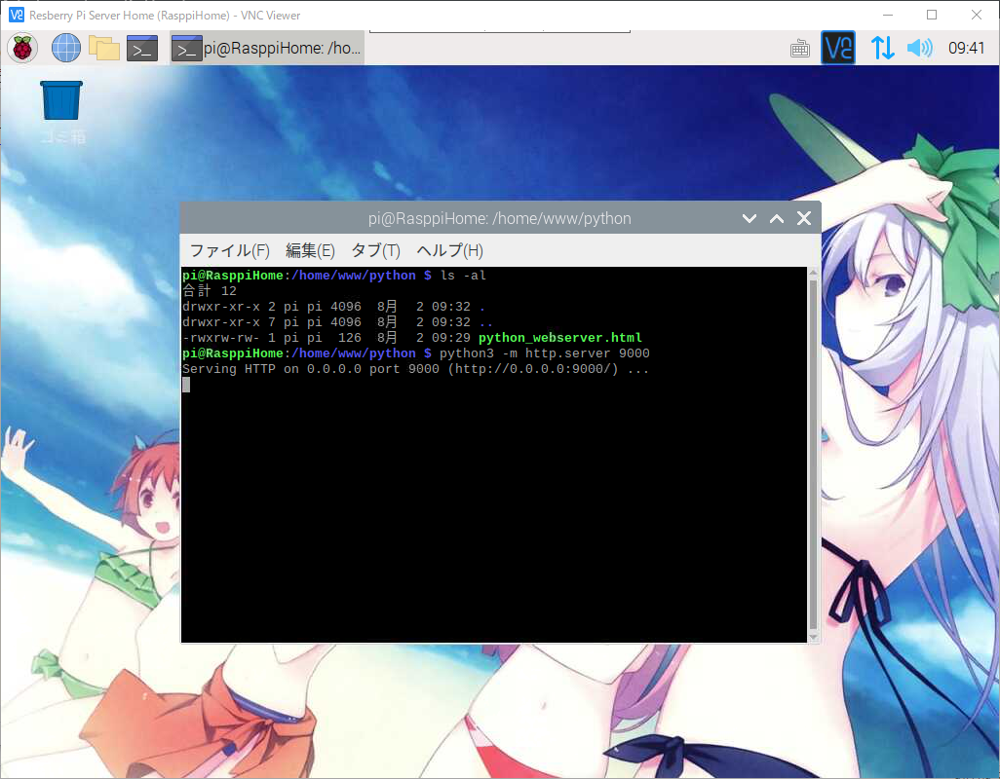
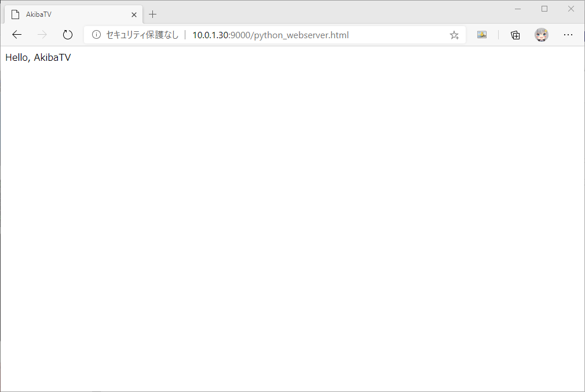

라즈베리파이 에서 파이썬을 이용해서 초간단 웹서버 구축하기
라즈베리파이 에서 파이썬을 이용해서 초간단 웹서버 구축하기
안녕하세요. AkibaTV입니다.
이번에 소개할 내용은 라즈베리파이 에서 파이썬을 이용해서 초간단 웹서버 구축하기 입니다.
html파일과 자바스크립트를 이용해 웹서버에서 간단하게 테스트를 하고싶지만
서버를 구축하고 설정하고 해야되는 번거로움이 많은경우가 있습니다.
단순히 확인만 하고 싶었을 뿐이지만요…
그럴경우에는 파이썬을 이용해서 초간단하게 웹서버를 구축을 해보실수가 있습니다.
어떻게 하는지 해보도록 하겠습니다.
우선 간단한 html파일을 만들어 보도록 하겠습니다.
Visual Studio Code(비주얼 스튜디오 코드)로 실행하신후 python_webserver.html로 파일을 추가해 주시기 바랍니다.

추가를 하셨으면 아래와 같이 코딩을 해주시기 바랍니다.
1 | <html> |

실제로 제대로 동작을 하는지 확인을 해보도록 하겠습니다.
작성을 하신 소스파일을 라즈베리파이에 올려주시기 바랍니다.

서버에 파일이 올라간것을 확인이 되셨으면 아래와 같이 명령어를 입력해 주세요.
1 | # 포트번호는 임의대로 |

서버가 기동이 되셨으면 웹브라우저를 실행하시고 http://라즈베리파이서버 IP:포트번호/python_webserver.html
위의 주소를 실행해 주시기 바랍니다.

접속을 하시면 위와같이 등록해놓은 html파일이 웹브라우저에서 실행되는것을 확인 하실수 있습니다.